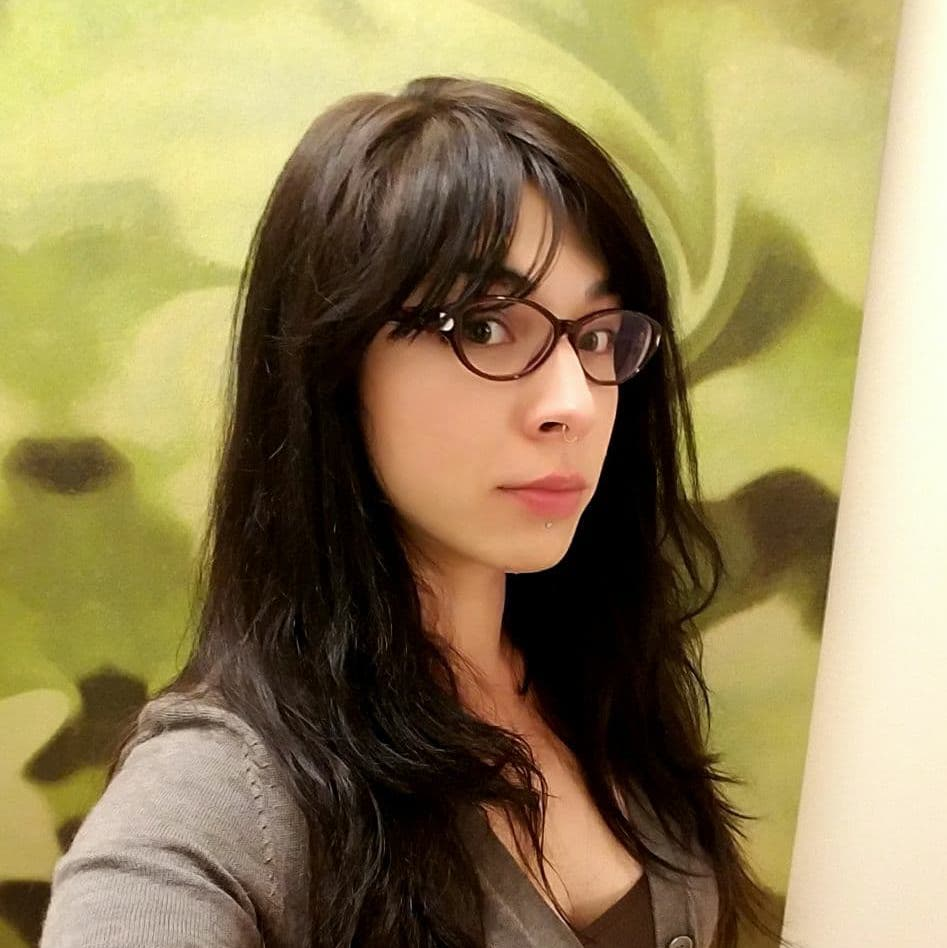

About Me
I currently work in fertility and ecommerce as a client service coordinator at a cryobank. I assist domestic and international clients find the donors that are needed to grow their families. My experience with websites in the industry as well as client feedback expanded my awareness of how the function of a website can have a major impact on monumental life decisions. I’m excited to be embarking on a career path in web design.
I was born and raised in th Pacific Northwest and I enjoy the great things that the region has to offer. In my free time I enjoy foraging in the Cascades and on the Olympic Peninsula and expanding my knowledge of local wildlife, especially mushrooms and other wild edibles.